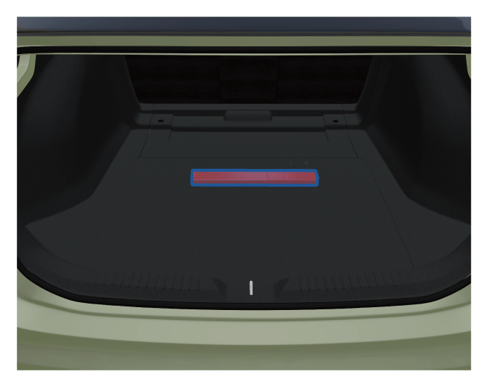

– 打开行李箱盖，里面放置有三角警告牌。
行李箱
为确保整车操纵稳定性，装载行李时，应尽可能均匀的放置物品，并且重物应放在行李箱前端。
行李箱随车物品

配备补胎机车型*：

–取出行李箱地毯，里面放置有充气泵、补胎液、牵引钩、三角警告牌。
配备备用轮胎车型*：

–取出行李箱地毯，里面放置有随车工具、备用轮胎。
— 页面到底了 —
为确保整车操纵稳定性，装载行李时，应尽可能均匀的放置物品，并且重物应放在行李箱前端。
– 打开行李箱盖，里面放置有三角警告牌。
–取出行李箱地毯，里面放置有充气泵、补胎液、牵引钩、三角警告牌。
–取出行李箱地毯，里面放置有随车工具、备用轮胎。
— 页面到底了 —